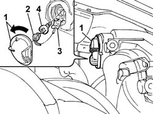
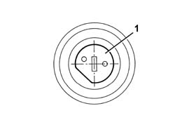

5540B68 Fog light BULB in one exhaust gas discharge LIGHT CLUSTER left or right RR
- Path
- Procedures > 55 ELECTRICAL EQUIPMENT > 5540 EXTERIOR LIGHTING > 5540B HEADLAMPS > 5540B68 Fog light BULB in one exhaust gas discharge LIGHT CLUSTER left or right RR
- Kind
- repair procedure (removal / refitting; the operation number is the code)
- Applies to
- all engines; all production periods
- Interactive page
- https://sloeber94.github.io/elrnDB-aGt/en/#/125001661
Applies to: all engines; all production periods
 Removing
Removing
 Refitting
Refitting1. Rotate the cover in an anti-clockwise direction and remove it.
2. Disconnect the electrical connection.
3. Release the retaining spring moving it sideways.
4. Extract the bulb.

Applies to: all engines; all production periods
Refitting
RemovingCheck the condition and the cleanliness of the lamp.
1. Insert the bulb in its housing, positioning it as illustrated in the diagram.

Applies to: all engines; all production periods
Engage the retaining clip.
Connect the electrical connection.
Refit the cover rotating it in place.